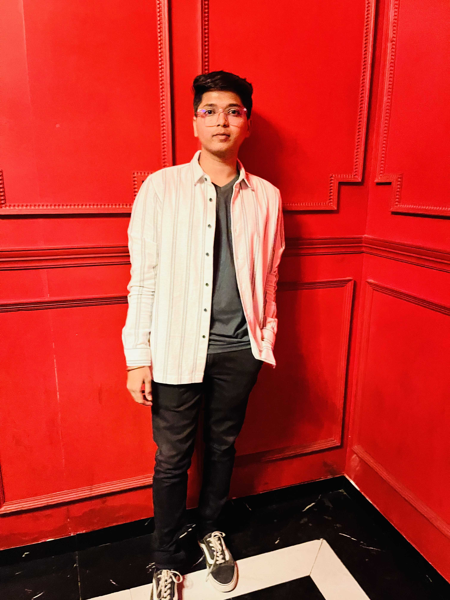

|  |
I am a passionate software engineer with expertise in problem solving and algorithmic thinking.
I love to explore various technologies and frameworks to develop efficient and scalable solutions.
With a strong foundation in data structures and algorithms, I strive to create robust and optimised code.
I am constantly expanding my skills and staying up-to-date with the latest advancements in the field of software development. |
Education
- Bachelor of Engineering (B.E.) - Electronics and Telecommunications
Modern Education Society's College of Engineering, Pune. SPPU
7.85 CGPA
- HSC Board :- Yashwantrao Chavan Institute of Science, Satara.
Passed out in 2019 with aggregate of 61.69 %
- SSC Board :- New English School, Satara.
Passed out in 2017 with aggregate of 81.20 %
Skills
- C
- C++
- Java
- JavaScript
- TypeScript
- HTML5
- CSS
- SQL
- Angular
- Tailwind
Projects
-
To-Do List:
Technology: Angular
Description:
- To-Do List project is an application specially built to keep track of errands or tasks that need
to be done.
-
This application will be like a task keeper where the user would be able to enter the tasks
that thay need to do.
-
Customized Database Management System:
Technology: Java Programming
Description:
- This project provides the emulation of the all facilities and functionalities provide by the
Database Management System.
-
For emulation purpose we create parser to parser SQL queries.
-
We have provided own customized shell to interact with the Database Management System.
- Each query gets handled explicitly with all constraints and aggregate functions.
-
Generalized Data Structure library :
Technology: C++ Programming
Description:
- This project is considered as library which contains generic implementation of all the major
types of data structure .
-
It provide readymade implementation of all fundamental operation as well as advanced
operation on linear, non linear data structure in an object oriented way.
- We provide generic way of implementation so we use the functionality for any type of data
types.
- All the object oriented design policies are used in this project